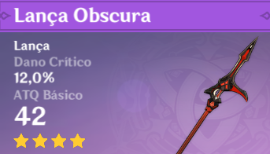

| Lanças |
Imagem |
Passiva |
Como obter |
| Báculo de Homa |
 |
Liberdade da Borboleta Vermelha Vida aumenta em 20%. Além disso, oferece um bônus
ATQ com base em 0.8% do Vida máximo do usuário. Quando o Vida do portador é inferior a 50%, esse
bônus ATQ é aumentado em um adicional 1% do Vida máximo.
|
Oração de evento limitado
|
| Lança do Penhasco Obscuro |
 |
De Vitória em VitóriaApós derrotar um inimigo, o ATQ é aumentado em 12% por 30s.
Este efeito pode ser acumulado até 3x e a duração de cada acúmulo é independente dos outros.
|
Comprado nas Barganhas da Paimon
|
| Perdição do Dragão |
 |
Destruição das Chamas e ÁguaAumenta o Dano contra inimigos afetados por Hydro ou
Pyro em 20%.
|
Oração do mochileiro
|
| Lança do Duelo |

|
GladiadorSe houver pelo menos 2 oponentes próximos, o ATQ é aumentado em 16% e a
DEF é aumentada em 16%. Se houver menos de 2 oponentes nas proximidades, o ATQ é aumentado em 24%.
|
Recompensa do passe de batalha
|